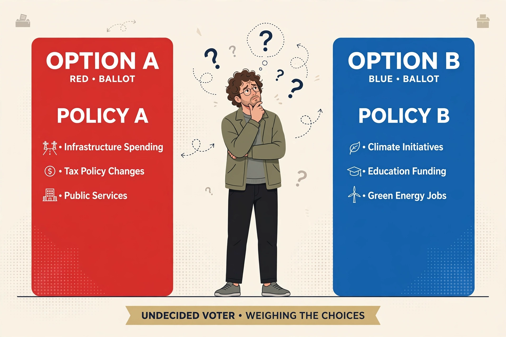

A swing voter is a voter who has no strong loyalty to a particular political party and whose vote can be "swung" between parties from election to election — for example, a voter who supported one party in one contest and another party in the next, or an undecided voter who decides late in a campaign. Swing voters are the central target of election campaigning in systems where most voters are reliable partisans, because moving a small number of them can decide the outcome, especially in closely contested constituencies known as swing states, marginal seats, or battlegrounds.
| Swing voter | |
|---|---|
 Swing voters lack a fixed party allegiance. | |
| Related terms | Floating voter; undecided voter; independent voter |
| Key venues | Swing states (US), marginal seats (UK), bellwether counties |
| Campaign focus | Persuasion advertising, targeted policy appeals |
Research on swing voters is mixed and contested. Classic studies portrayed them as the least politically informed and least engaged part of the electorate, deciding late and often on candidate image or a single salient issue rather than ideology. Other work identifies "issue swing voters" who are cross-pressured — agreeing with one party on some issues and the other party on others — and moderate self-declared independents. In the United States, most self-described independents "lean" reliably towards one party and behave much like partisans, so true swing voters are a smaller share of the electorate than raw independence figures suggest; estimates typically place them in the range of a tenth to a fifth of voters, and they are disproportionately important in the Electoral College because of the concentration of safe states.
Campaigns distinguish between persuasion aimed at swing voters and mobilisation aimed at turning out the party base; in polarised eras many strategists argue base turnout matters more. Nonetheless, advertising budgets concentrate overwhelmingly on a handful of swing states and marginal districts, and candidate messaging — on the economy, crime, health care, or abortion depending on the cycle — is calibrated to undecided and weakly attached voters there. In the United Kingdom the analogous concept is the "floating voter" in a marginal constituency, famously targeted as archetypes such as "Mondeo man" or "Worcester woman".
Some political scientists question the swing-voter concept itself, arguing that apparent vote switching often reflects turnout decisions (partisans staying home) rather than conversion, and that campaigns' obsession with a shrinking pool of persuadables distorts representation of the wider electorate.